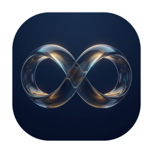
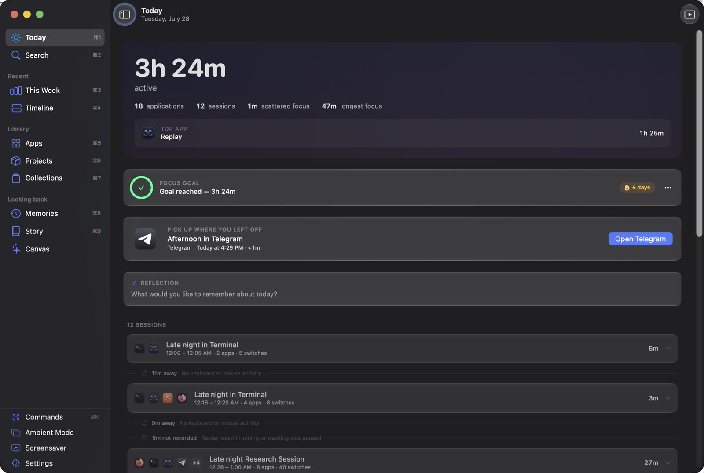
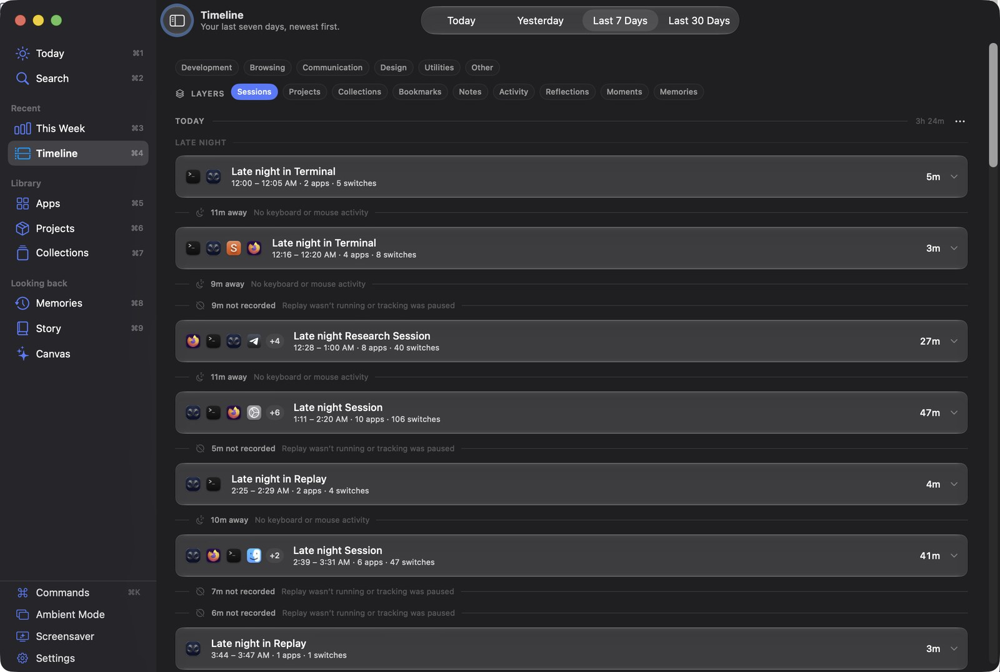
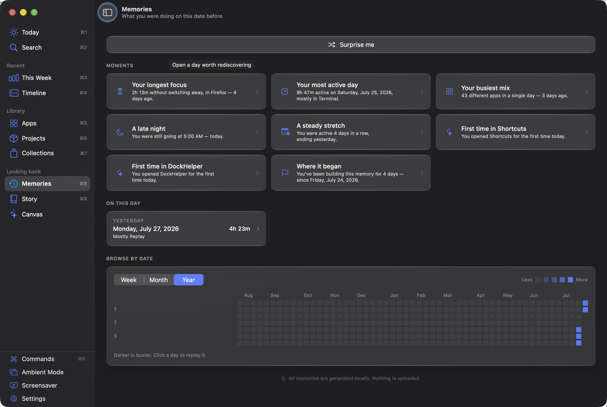

A private timeline of the apps you use.
It never leaves your Mac.
macOS 26 or later · Free and open source · Not yet signed — what that means

Which application is in front, and when you were away from the keyboard. That is the entire input. Everything Replay shows you is built from those two facts.
Not Accessibility, not Automation, not Screen Recording. Replay reads which app is frontmost through a standard macOS signal that every app can already see. If a feature seemed to need a permission, it was the wrong feature.
No window titles, no documents, no URLs, no keystrokes, no screenshots. It can tell you that you spent four hours in an editor, and nothing whatsoever about what you wrote.
No account, no cloud, no telemetry, no analytics. Your record is one SQLite file in your own user folder. Nothing recorded is ever transmitted anywhere, under any setting.
No score, no productivity rating, no “distracting” label on anything. A day that was mostly a browser is described as a day mostly in a browser.
Days newest first, split into the parts of the day you actually name — morning, afternoon, late night. Sessions group the runs of related work; the gaps between them are shown too, and labelled honestly as time away or time not recorded.
Add a note, a tag or a bookmark to any session. Search by name, note, tag or app.

Memories surfaces what this date looked like a week, a month, or two years back — your longest focus, your busiest day, the first time you opened something.
The year grid shades each day against fixed amounts of time rather than against the busiest day in view, so a quiet month and a heavy one do not look the same.

Two ways in. Homebrew compiles Replay on your machine, which means macOS never marks it as downloaded and it opens with no warning at all — that is why it is first.
brew tap nurkamol/tap brew install nurkamol/tap/replay-app # the application brew install nurkamol/tap/replay # the command-line reader
Then link it once so Spotlight and the Dock find it:
ln -sfn "$(brew --prefix)/opt/replay-app/Replay.app" /Applications/Replay.app
No tools needed — but macOS will refuse to open it the first time, and you should know why before you meet the dialog.
Get the latest releaseYou will see this if you download the app rather than build it, and it offers only Move to Trash or Cancel — which reads far worse than it is. The message is about a missing certificate, not about anything found in the app. Every unsigned Mac app gets it. A Developer ID costs 99 USD a year and this project does not have one yet.
Or one line in a terminal, which does the same thing:
xattr -dr com.apple.quarantine /Applications/Replay.app
Right-click ▸ Open does not work. That bypass existed for years and Apple removed it in macOS 15 — it is still the advice in most projects’ instructions.
Replay is a native Swift port of an app that already ships. The two are compared by a generated contract — the reference’s own constants, copy and formats, extracted automatically — so the port cannot drift from it quietly.